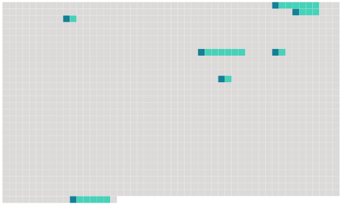

Longueur nb maillons : 7 mentions |
 |
Les registres seront clos et arrêtés par l'officier de l'état civil, à la fin de chaque année ; et dans le mois ; l'un des doubles sera déposé aux archives de la commune, l'autre [au greffe du tribunal de première instance] [1 phrases]
Les procurations et les autres pièces qui doivent demeurer annexées aux actes de l'état civils, seront déposées après qu'elles auront été paraphées par la personne qui les aura produites, et par l'officier de l'état civil, [au greffe du tribunal] , avec le double des registres dont le dépôt doit avoir lieu [audit greffe] [10 phrases]
Dans tous les cas où la mention d'un acte relatif à l'état civil devra avoir lieu en marge, d'un autre acte déjà inscrit, elle sera faite à la requête des parties intéressées, par l'officier de l'état civil, sur les registres courans ou sur ceux qui auront été déposés aux archives de la commune, et par [le greffier du tribunal de première instance] sur les registres déposés [au greffe] à l'effet de quoi l'officier de l'état civil en donnera avis dans les trois jours au commissaire du Gouvernement près ledit tribunal, qui veillera à ce que la mention soit faite d'une manière uniforme sur les deux registres. [7 phrases]
Le commissaire du Gouvernement près le tribunal de première instance sera tenu de vérifier l'état des registres lors du dépôt qui en sera fait [au greffe] il dressera un procès verbal sommaire de la vérification dénoncera les contraventions ou délits commis par les officiers de l'état civil et requerra contre eux la condamnation aux amendes. [31 phrases]
Cet acte énoncera, en outre, les jours, lieux et heures où les publications auront été faites : il sera inscrit sur un seul registre, qui sera côté et paraphé comme il est dit en l'article 41, et déposé, à la fin de chaque année, au [greffe du tribunal de l'arrondissement] |
 |
La ressource peut être téléchargée sur la page Ortolang
Si vous avez des questions ou vous voyez des erreurs, merci d'envoyer un mail à silvia.federzoni89@gmail.com
Site développé par S. Federzoni (contact)